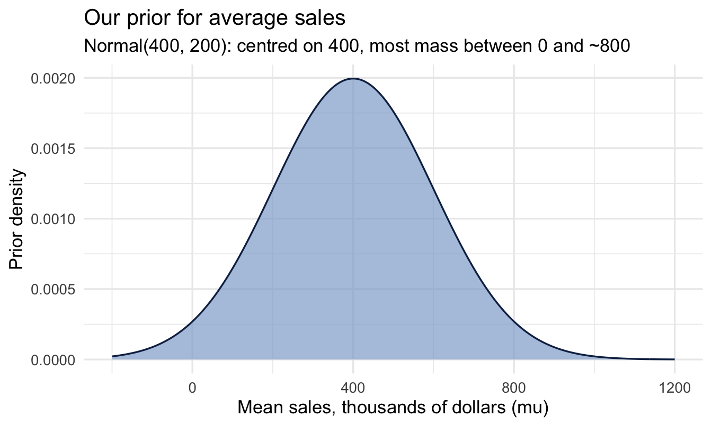
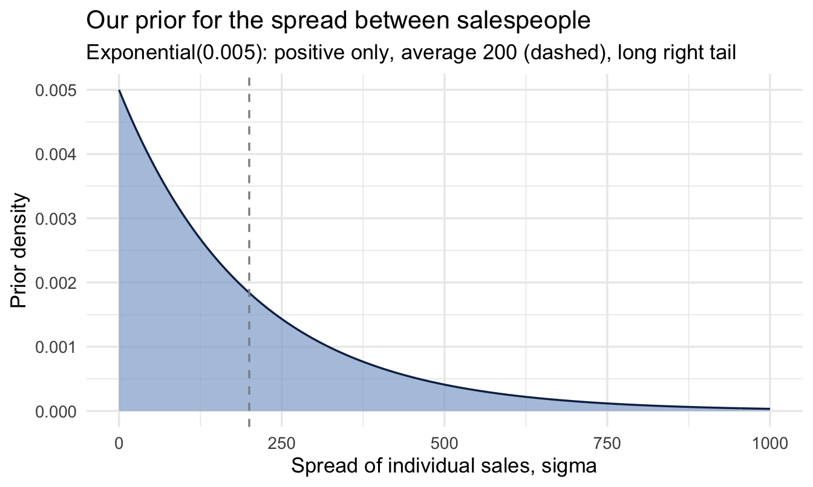
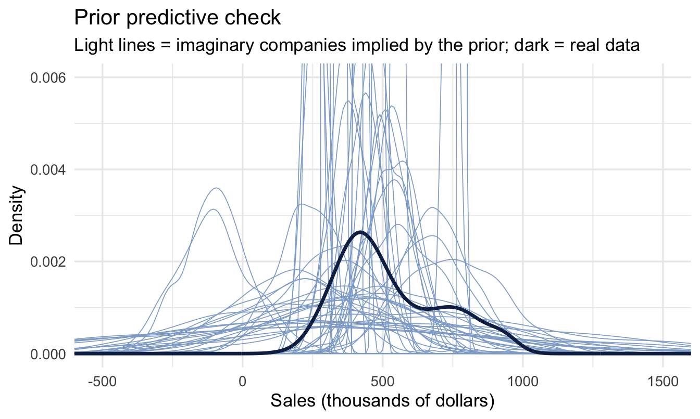
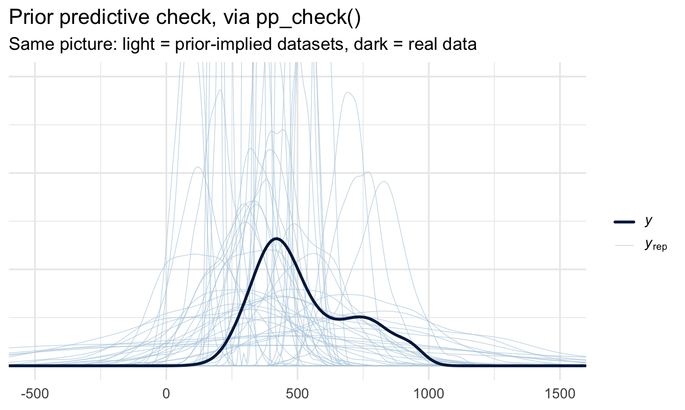
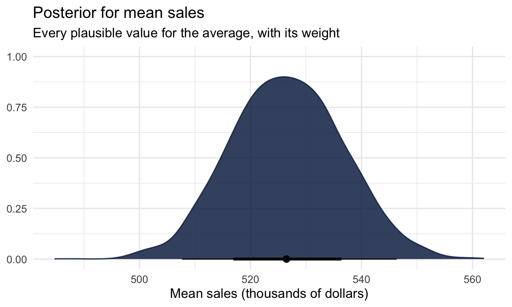
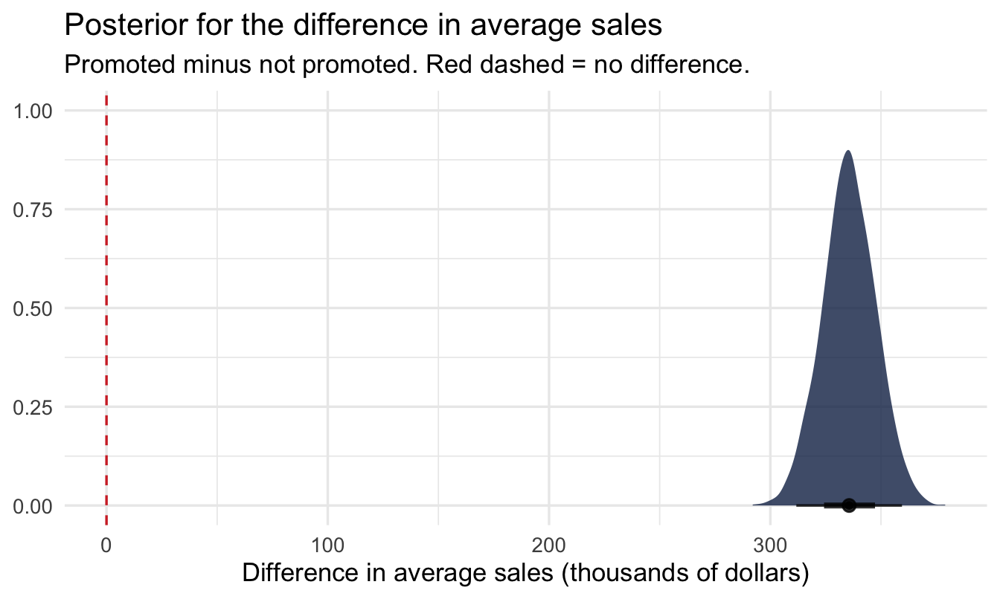
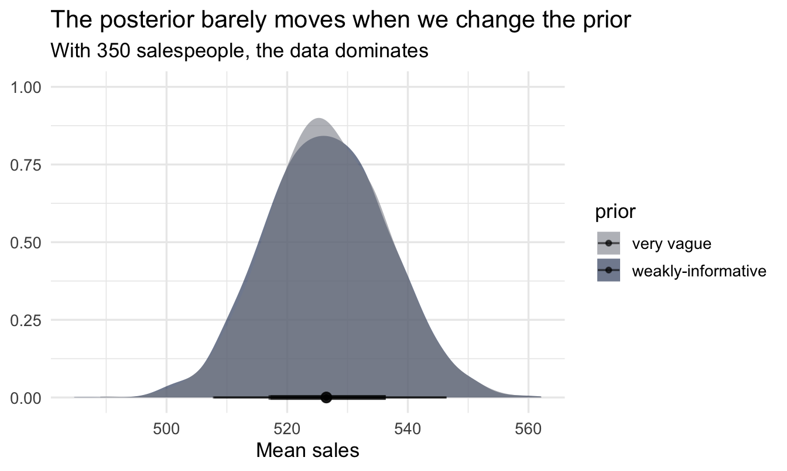

library(tidyverse)
library(peopleanalyticsdata)
library(brms)
library(tidybayes)
library(ggdist)
theme_set(theme_minimal(base_size = 13))
set.seed(2026)
# Book colour tokens: light blue = prior, red = likelihood, navy = posterior
prior_blue <- "#8fabd0"
red <- "#d32f2f"
navy <- "#122a52"
grey_alt <- "#8a8f98" # a comparison specification, not one of the three
data("salespeople", package = "peopleanalyticsdata")
# Chapter 1 found a single missing value in each of `sales`,
# `customer_rate` and `performance`; dropping those rows here keeps
# the rest of this chapter's code simple.
salespeople <- salespeople |> drop_na(sales, customer_rate, performance, promoted)5 Posteriors, Priors & Credible Intervals
Welcome back
Last chapter you built posteriors by hand. That was essential for seeing how Bayes works — but nobody does it by hand for real models.
Note
Today we meet brms, the tool you’ll use for the rest of this book and, very likely, your own analyses. The logic is identical to last chapter. Only the machinery changes.
A short detour: why nobody taught me this
When I was taught statistics and econometrics, we were taught to think like Bayesians — prior belief, evidence, updating — and then made to analyse like frequentists. At the time that felt like an odd inconsistency nobody quite explained. It wasn’t perversity. The methods in this chapter barely existed outside a handful of research papers, and the computers we had couldn’t have run them if they had.
I was unusual at university in owning a computer at all: a Mac LC, with what felt at the time like a positively extravagant 2MB of RAM and a 40MB hard drive. I loved that computer. It would have spent the better part of a day on the model we’re about to fit in a few seconds — assuming the software had existed, which it didn’t.
The ideas were much older than the hardware. The core algorithm goes back to 1953, at Los Alamos, where Metropolis and colleagues worked out how to explore a complicated distribution by taking a long random walk through it; Hastings generalised it in 1970. But for decades it stayed in physics. The moment it crossed into statistics is usually dated to 1990, when Gelfand and Smith showed that this family of methods could compute Bayesian posteriors that had been analytically hopeless.
That’s the same year the Mac LC went on sale and I raced to get a Mac with a colour screen! The algorithm and I turned up at university at roughly the same moment, and only one of us was in any state to do the work.
What followed was thirty years of turning possible into practical. BUGS arrived in the early 1990s and put Bayesian modelling within reach of researchers who weren’t also programmers, followed by JAGS. Then Hamiltonian Monte Carlo — a much smarter way of wandering through the distribution, borrowed from physics again — and Stan, first released in 2012, which made it fast and reliable enough for everyday use. brms landed in 2015: you write an ordinary R formula, brms writes the Stan program for you, and Stan compiles it down to C++. Three decades of work, wrapped in one function call.
NoteWhy this book exists now
I can teach this material to complete statistics beginners — which I do — because that stack of advances removed the hard part. And I’d argue it’s now easier than the frequentist route, not harder.
The classical path asks you to memorise a menu: a t-test here, a chi-square there, Cox regression for survival data, proportional-odds for a Likert scale, each with its own function and its own assumptions. From this chapter to the end of the book, every single analysis is the same brm() call with different arguments. You learn one thing properly instead of twenty things shallowly.
The machinery still gets easier every year. It’s worth knowing that you’re standing on it, and that not so long ago it wasn’t there.
What you’ll be able to do by the end
- Fit a Bayesian model with
brms, and read every line of its output - Choose weakly-informative priors and visualise what they imply
- Run a prior predictive check — by hand and with
pp_check() - Report a posterior as a point estimate + credible interval
- Get any summary you want out of the posterior — a different interval width, a median, a direct probability
- Compare two posteriors by subtracting their draws, and report the probability that one quantity is larger than the other
- Check whether your conclusion is sensitive to the prior
- Know what a Bayes Factor is, and why this book generally doesn’t reach for one
One warning about the first run
Important
The first time you fit a brms model it compiles — it writes and builds a small C++ program behind the scenes. That can take a minute. After that it’s fast. Nothing is broken; it’s just warming up.
5.1 Setup
5.2 The model: average sales
5.2.1 It starts, again, in a meeting
The promotion question from Chapter 4 bought you some credibility, and credibility in this job is mostly paid out in further questions. This one arrives from Finance, three weeks before the planning cycle:
“What does a salesperson actually bring in? We need a number to build next year’s quota on.”
There is an obvious temptation here, and it’s the same one as last time. You have 350 salespeople with recorded sales. You could take the mean, put it on a slide, and be finished before lunch.
Two things stop you. The first is that the question isn’t quite a question yet. A salesperson — which one? The team has people who joined last month and people who have run the same territory for a decade. A short conversation settles what Finance actually wants: the sales figure a typical salesperson produces in a year, as a basis for a target, not a description of anyone in particular.
The second is Chapter 3. The mean of 350 people is a sample mean, and sample means wobble. Handing Finance a single number invites them to treat it as exact, and quotas built on numbers that are treated as exact have a way of becoming somebody’s performance review.
5.2.2 Our question
What is the average sales figure? — not the average in our data, which we already know and could compute in one line, but the underlying average the process produces, reported with honest uncertainty.
Note
This is the same shape of problem as Chapter 4: one unknown number, and a body of data that constrains it without pinning it down. What changes is that the unknown is now a quantity on a continuous scale rather than a rate between 0 and 1 — and that we’ll stop doing the arithmetic by hand.
5.2.3 Writing a model down
Before you can learn anything about that average, you have to say what you think generates the data. Ours says each salesperson’s sales figure sits around an unknown mean, scattered by an unknown amount:
\text{sales}_i \sim \text{Normal}(\mu,\ \sigma)
Two unknowns to learn: μ, the average we were asked for, and σ, how far individual salespeople sit from it.
5.2.4 Why that model?
Nothing forced the Normal on us. It earns its place for three reasons, in descending order of importance:
- We looked. Chapter 3 plotted this exact variable and laid a Normal curve over it — the histogram is a single hump, roughly symmetric, with no second peak and no long tail dragging off to one side. That’s the shape a Normal describes.
- The generating story fits. A salesperson’s annual figure is the sum of many bookings, none of which dominates. Chapter 3’s demonstration of why sums like that tend towards a bell applies directly here.
- It has exactly the two unknowns we care about. A Normal is described entirely by a centre and a spread, which is convenient when the centre is the thing Finance asked for.
Important
A likelihood is a modelling choice, not a fact about the world, and it’s the choice that most repays being explicit about. Ours has one known flaw: a Normal puts some probability below zero, and nobody books negative sales. With this data the flaw is harmless — the mean sits far enough above zero that the implied fraction is tiny, and we’ll measure it rather than assert it when we run the prior predictive check. Chapter 12 covers what to do when it isn’t harmless.
5.2.5 The same thing in brms
brm(sales ~ 1, data = salespeople, family = gaussian())sales— the outcome we’re modelling~ 1— “just an intercept”, i.e. estimate one overall meanfamily = gaussian()— the Normal likelihood
From next chapter we’ll put predictors on the right of the ~.
5.3 Priors — and always look at them
5.3.1 What makes a good prior
Important
A weakly-informative prior rules out the absurd without dictating the answer. sales in this dataset is recorded in thousands of dollars, so the numbers run in the hundreds. A prior that allows negative sales, or sales a thousand times larger than anything a salesperson has ever booked, is not “neutral” — it’s just careless.
5.3.2 Our two priors
Our model has two unknowns, so we need two priors: one for the average μ, one for the spread σ. Take them in turn, in plain language first — the code that hands them to brms comes once we know what we’re asking for.
5.3.3 The average: what’s a plausible number?
normal(400, 200) on the Intercept says: before looking at the data, my best guess for average sales is around 400 thousand dollars, and I’d be unsurprised by anything within a couple of hundred either side of that.
The 400 is the centre — where I think the answer probably sits. The 200 is the standard deviation, a measure of how spread out the guess is: roughly two thirds of the prior sits between 200 and 600, and about 95% between 0 and 800. It’s a deliberately loose statement. I’m claiming to know the scale of the answer — hundreds, not tens, not tens of thousands — and very little else.
5.3.4 The spread: how different are salespeople from each other?
exponential(0.005) on sigma is the one that needs unpacking, because it looks arbitrary and isn’t.
σ is the spread of individual salespeople around the average — the difference between a company where everyone sells much the same amount and one where the stars sell five times what the strugglers do.
The obvious question, given that we’ve just used a Normal for the average and a Normal likelihood for the data, is why σ doesn’t get a Normal too. Three facts drive the choice:
- A spread can’t be negative. This is the one that rules the Normal out. A Normal prior is symmetric and unbounded, so it would happily propose σ = −80, which isn’t an unlikely value — it’s a meaningless one. The exponential only exists above zero, so the impossible half of the number line is never on the table.
- Smaller is more plausible than larger. The exponential is highest at zero and falls away smoothly. That matches how spread usually behaves: modest differences are common, enormous ones are rare — but nothing is banned outright, so the data can still argue for a big σ if that’s what it sees.
- One number sets the scale. The exponential has a single parameter, the rate, and its average value is simply
1 / rate. Sorate = 0.005means “I expect the spread to be about 1 / 0.005 = 200 thousand dollars.”
TipA simple rule for a
sigma prior
rate = 1 ÷ your honest guess at the spread.
Guessing 200 here isn’t clairvoyance. Sales in this business run from somewhere near 100 to somewhere near 900, and a rough rule is that a range covers about four standard deviations — so (900 − 100) / 4 ≈ 200. That’s the whole calculation. Guess 100 instead and you’d write exponential(0.01); the posterior would barely notice.
Note
An exponential isn’t the only defensible answer. A half-Normal — a Normal folded at zero — is equally common and behaves similarly: it also lives only on the positive side, and it puts slightly less weight on very small spreads. The requirement is the boundary at zero, not the particular curve. What you must not do is reach for an ordinary Normal out of habit.
5.3.5 Writing them into the model
Now that we know what we’re claiming, it’s two lines of code:
- 1
-
class = Interceptattaches the first prior to the unknown average. - 2
-
class = sigmaattaches the second to the unknown spread.
Note
This is the one place the book breaks its own rule about naming arguments in full. Inside prior() you write the distribution in Stan’s notation, not R’s, and Stan’s arguments are positional: normal(centre, standard deviation) and exponential(rate). There is no sd = to write. That’s precisely why the paragraphs above exist — when the code can’t say which number is which, the prose has to.
5.3.6 Visualise both priors
tibble(mu = seq(-200, 1200, length.out = 400)) |>
mutate(density = dnorm(mu, mean = 400, sd = 200)) |>
ggplot(aes(mu, density)) +
geom_area(fill = prior_blue, colour = navy, linewidth = 0.6, alpha = 0.7) +
labs(title = "Our prior for average sales",
subtitle = "Normal(400, 200): centred on 400, most mass between 0 and ~800",
x = "Mean sales, thousands of dollars (mu)", y = "Prior density")
Show the plotting code (same pattern as above)
tibble(sigma = seq(0, 1000, length.out = 400)) |>
mutate(density = dexp(sigma, rate = 0.005)) |>
ggplot(aes(sigma, density)) +
geom_area(fill = prior_blue, colour = navy, linewidth = 0.6, alpha = 0.7) +
geom_vline(xintercept = 200, linetype = "dashed", colour = grey_alt) +
labs(title = "Our prior for the spread between salespeople",
subtitle = "Exponential(0.005): positive only, average 200 (dashed), long right tail",
x = "Spread of individual sales, sigma", y = "Prior density")
Note the shape of the second plot: it never crosses into negative territory, its most likely values are small, and the tail runs a long way right. Under this prior there’s still roughly a 5% chance that σ exceeds 600 — we’ve expressed a preference, not a rule.
Important
Never trust a prior you haven’t plotted. Two lines of code each, and it’s the difference between a prior you chose and a prior you copied.
5.3.7 The prior predictive check
A prior isn’t really about the parameter in isolation — it’s about the data it implies.
ImportantPlotting is how you audit yourself — and how you explain yourself
normal(400, 200) is a claim about the world written in a notation almost nobody reads fluently, including, on a bad day, you. Turning it into a picture does two jobs.
The first is a sense check. A number that looked reasonable in code often looks obviously wrong once drawn — a prior that puts a fifth of its weight below zero, or one so tight it has effectively answered the question before the data arrived. You catch that in the picture in seconds; you rarely catch it by rereading the arguments.
The second is communication. “I assumed a Normal(400, 200) prior on the intercept” ends most stakeholder conversations badly. A plot with the caption “before looking at the data, I treated anything from roughly 0 to 800 as plausible” invites the useful reply — “that’s far too wide, we’ve never had a rep under 150” — which is your VP handing you a better prior. The chart isn’t decoration; it’s the only form in which a non-statistician can disagree with your assumptions, which is exactly what you want them to be able to do.
Note
A prior predictive check simulates whole datasets from the prior alone (before seeing any real data) and asks: are these numbers roughly the right size?
5.3.8 Doing it by hand first
There is no magic in a prior predictive check, so it’s worth building one yourself once. The recipe is three lines of thinking:
- Draw a μ from its prior.
- Draw a σ from its prior.
- Generate a fake team of salespeople from
Normal(μ, σ).
Repeat 50 times and you have 50 imaginary companies, each one consistent with your prior beliefs and nothing else.
1prior_sims <- tibble(sim = 1:50) |>
mutate(
2 mu = rnorm(n(), mean = 400, sd = 200),
3 sigma = rexp(n(), rate = 0.005)
) |>
mutate(
4 sales_sim = map2(mu, sigma, function(m, s) {
rnorm(300, mean = m, sd = s)
})
) |>
5 unnest(sales_sim)
ggplot(prior_sims, aes(x = sales_sim, group = sim)) +
geom_density(colour = prior_blue, linewidth = 0.3) +
geom_density(data = salespeople, aes(x = sales), inherit.aes = FALSE,
colour = navy, linewidth = 1.2) +
6 coord_cartesian(xlim = c(-500, 1500), ylim = c(0, 0.006)) +
labs(title = "Prior predictive check",
subtitle = "Light lines = imaginary companies implied by the prior; dark = real data",
x = "Sales (thousands of dollars)", y = "Density")- 1
- Fifty imaginary companies. Each row will become one complete alternative world.
- 2
-
Draw that world’s average sales from the Intercept prior. Note we’re sampling from the prior, not evaluating it — this is the same
normal(400, 200), used as a random number generator. - 3
- Draw that world’s spread between salespeople from the sigma prior, independently of the average.
- 4
-
Given that pair of numbers, generate 300 salespeople. This is the likelihood —
Normal(μ, σ)— doing exactly what the model says it does. - 5
- Unpack the 50 lists of 300 into one long tibble, one row per imaginary salesperson.
- 6
- Clip the axes. See the callout below for why this is necessary and not a fudge.

ImportantWhy we clipped the axes — and why the spikes are real
Look at coord_cartesian(): without it this plot is unreadable, and the reason is worth understanding rather than hiding.
The exponential(0.005) prior on σ has its highest density near zero. So a few of our 50 draws come back with a very small σ — an imaginary company where every salesperson sells almost exactly the same amount. A density curve for such a company is a needle: extremely tall and extremely narrow. One needle sets the y-axis for the whole plot and squashes everything else flat against the bottom.
That is not a bug, and it isn’t a reason to change the prior. It’s a reminder of what an exponential prior actually says: small spreads are perfectly possible, large ones are increasingly unlikely. We clip the axes so we can see the bulk of the curves; the needles are still there, running off the top.
5.3.9 The same check, the brms way
Once you’ve seen it by hand, brms will do it for you. Setting sample_prior = "only" tells it to ignore the outcome data entirely and sample from the prior:
fit_prior_only <- brm(
sales ~ 1, data = salespeople, family = gaussian(),
prior = priors, sample_prior = "only",
chains = 2, iter = 1000, seed = 5, refresh = 0
)
pp_check(fit_prior_only, ndraws = 50) +
coord_cartesian(xlim = c(-500, 1500), ylim = c(0, 0.006)) +
labs(title = "Prior predictive check, via pp_check()",
subtitle = "Same picture: light = prior-implied datasets, dark = real data")
Tip
pp_check() almost always needs a coord_cartesian() when you use it on a prior-only model. Prior draws are deliberately wider than reality, so the default axes stretch to fit the most extreme simulation and the interesting region collapses to a sliver. Add the limits; don’t assume the plot is broken.
5.3.10 Reading the verdict
A picture is good, but a number is easier to defend. Two questions settle it:
prior_sims |>
summarise(
prop_negative = mean(sales_sim < 0),
prop_over_2000 = mean(sales_sim > 2000),
median_sales = median(sales_sim)
)# A tibble: 1 × 3
prop_negative prop_over_2000 median_sales
<dbl> <dbl> <dbl>
1 0.115 0.000467 414.
Important
The prior-implied sales figures overlap the real data’s range — sensible. A small fraction of impossible values (negative sales) is the price of using a Normal likelihood on a positive quantity; a large fraction would tell us to think again. A prior centred on 4,000 would sit far to the right, a clear warning sign. This is the check that lets you defend a prior when someone asks where it came from.
5.4 Fit the model
fit_sales <- brm(
sales ~ 1, data = salespeople, family = gaussian(),
prior = priors,
chains = 4, iter = 2000, seed = 5, refresh = 0
)5.4.1 Every argument, explained
This is the call you’ll be writing for the rest of the book, so it’s worth taking apart properly. Only the first three arguments describe your model; the rest describe how the computer should go looking for the answer.
| Argument | What it does |
|---|---|
sales ~ 1 |
The model formula. Outcome on the left, predictors on the right; 1 means “intercept only”. |
data = salespeople |
Where the variables live. |
family = gaussian() |
The likelihood — how individual observations scatter around the mean. |
prior = priors |
The priors we defined and plotted above. Leave this out and brms picks defaults for you, which is exactly the sort of thing you don’t want happening silently. |
chains = 4 |
Run the sampler four separate times, from four different random starting points. |
iter = 2000 |
Each chain takes 2,000 steps. |
seed = 5 |
Fixes the random numbers so you and I get the identical answer. |
refresh = 0 |
Suppresses the progress messages. Use refresh = 100 when you want to watch a slow model. |
NoteChains, iterations and warmup
Chapter 4 built a posterior by evaluating it on a grid. brms can’t do that — real models have too many parameters — so instead it sends a sampler wandering through the space of possible parameter values, spending more time where the posterior is dense. Each visited point is one draw. Pile the draws up and their histogram is the posterior.
A chain is one such wandering walk. We run four because a walker that starts in a silly place takes a while to find the interesting region — and if all four chains, starting from different silly places, end up describing the same distribution, that’s strong evidence the sampler found the real posterior rather than getting stuck.
The first half of each chain is warmup (warmup = iter / 2 by default, so 1,000 steps here). Those draws are thrown away: they’re the walker finding its feet, plus Stan tuning its step size. The remaining 1,000 draws per chain × 4 chains gives us 4,000 posterior draws to work with — plenty for the intervals we’ll report.
If a model feels slow, add cores = 4 to run the chains in parallel. It doesn’t change the answer, just the wait.
5.4.2 Reading the summary
summary(fit_sales) Family: gaussian
Links: mu = identity
Formula: sales ~ 1
Data: salespeople (Number of observations: 350)
Draws: 4 chains, each with iter = 2000; warmup = 1000; thin = 1;
total post-warmup draws = 4000
Regression Coefficients:
Estimate Est.Error l-95% CI u-95% CI Rhat Bulk_ESS Tail_ESS
Intercept 526.57 10.11 507.68 546.34 1.00 3576 2571
Further Distributional Parameters:
Estimate Est.Error l-95% CI u-95% CI Rhat Bulk_ESS Tail_ESS
sigma 185.64 7.27 171.96 200.42 1.00 3243 2549
Draws were sampled using sampling(NUTS). For each parameter, Bulk_ESS
and Tail_ESS are effective sample size measures, and Rhat is the potential
scale reduction factor on split chains (at convergence, Rhat = 1).The output comes in blocks:
- The header repeats the family, the formula and the sampling settings — useful when you come back to a saved model in six months.
- Regression Coefficients (older
brmsversions call this block Population-Level Effects) holds the parameters from the formula. Right now that’s justIntercept, the posterior for mean sales. - Further Distributional Parameters (older versions: Family Specific Parameters) holds everything else the family needs — here
sigma, the spread of individual salespeople around that mean. Note that σ is a genuine unknown with its own posterior, not a nuisance figure computed on the side.
And the columns:
| Column | What it means |
|---|---|
Estimate |
The mean of the posterior draws. A summary of the distribution, not “the answer”. |
Est.Error |
The standard deviation of the posterior draws — how wide our uncertainty is. It plays the role a standard error plays elsewhere, but it’s a direct statement about the parameter. |
l-95% CI, u-95% CI |
The 95% credible interval: 2.5% of draws fall below the first, 2.5% above the second. |
Rhat |
Do the four chains agree? 1.00 is what you want. Anything from about 1.01 upwards means they’re describing different distributions — don’t report the model. |
Bulk_ESS |
Effective sample size for the centre of the distribution. Draws are correlated, so 4,000 draws aren’t worth 4,000 independent ones; this is the honest count. Want it in the hundreds at minimum, ideally thousands. |
Tail_ESS |
The same idea for the tails — the part that determines your interval endpoints. |
Tip
Rhat and ESS are diagnostics about the computation, not about your model’s quality. A model can sample perfectly and still be the wrong model. Chapter 11 (optional) opens the sampler up; Chapter 7 covers judging whether the model is any good.
5.5 Read the posterior
5.5.1 The whole distribution
1draws <- fit_sales |> spread_draws(b_Intercept)
draws |>
ggplot(aes(x = b_Intercept)) +
2 stat_halfeye(fill = navy, slab_colour = navy,
slab_linewidth = 0.6, alpha = 0.85) +
labs(title = "Posterior for mean sales",
subtitle = "Every plausible value for the average, with its weight",
x = "Mean sales (thousands of dollars)", y = NULL)- 1
-
spread_draws()pulls the raw posterior draws out of the fitted model and into a tidy tibble — one row per draw.b_Interceptisbrms’s internal name for the intercept (b_for the coefficients block). This object is the one we’ll keep reusing for the rest of the chapter; everything below is an ordinary dplyr operation on it. - 2
-
stat_halfeye()draws the density with the median and the 66% and 95% intervals underneath it, so the point estimate and the uncertainty appear in one image.

5.5.2 Point estimate + credible interval
draws |> mean_qi(b_Intercept, .width = 0.95)# A tibble: 1 × 6
b_Intercept .lower .upper .width .point .interval
<dbl> <dbl> <dbl> <dbl> <chr> <chr>
1 527. 508. 546. 0.95 mean qi
ImportantSay it in plain English
“Our best estimate of average sales is about [the mean], and there is a 95% probability it lies between [lower] and [upper].”
5.6 The posterior is the real prize
5.6.1 You have 4,000 numbers, not one answer
Everything we’ve just reported — the mean, the 95% interval — came out of the same object: a vector of 4,000 draws. Nothing was decided at fitting time. If you can phrase a question about that vector, you can answer it, and you can do it after the fact without refitting anything.
Want a different interval width? Take it.
draws |> median_qi(b_Intercept, .width = c(0.5, 0.89, 0.95))# A tibble: 3 × 6
b_Intercept .lower .upper .width .point .interval
<dbl> <dbl> <dbl> <dbl> <chr> <chr>
1 526. 520. 533. 0.5 median qi
2 526. 511. 543. 0.89 median qi
3 526. 508. 546. 0.95 median qi
Note
The 89% interval isn’t a typo. Richard McElreath uses it throughout Statistical Rethinking, partly to make the point that 95% is a convention, not a law of nature — it’s inherited from a frequentist testing tradition this framework doesn’t need. Pick a width, say why, and stick to it.
Want a different point summary? Take that too — mean, median, or the most probable value:
draws |>
summarise(
mean = mean(b_Intercept),
median = median(b_Intercept),
lower_q = quantile(b_Intercept, probs = 0.25),
upper_q = quantile(b_Intercept, probs = 0.75)
)# A tibble: 1 × 4
mean median lower_q upper_q
<dbl> <dbl> <dbl> <dbl>
1 527. 526. 520. 533.5.6.2 Questions you can only ask this way
Because the posterior is a probability distribution over the parameter, you can ask directly for the probability of a claim — and get a number a stakeholder can use:
draws |>
summarise(
p_above_500 = mean(b_Intercept > 500),
p_above_520 = mean(b_Intercept > 520),
p_above_540 = mean(b_Intercept > 540)
)# A tibble: 1 × 3
p_above_500 p_above_520 p_above_540
<dbl> <dbl> <dbl>
1 0.996 0.735 0.0952
Important
“There is a 74% probability that average sales exceed 520.” That is a sentence you can say out loud in a business meeting and have it mean what the listener thinks it means. A p-value cannot be translated that way, however often it is.
Tip
The risk that comes with this flexibility is the temptation to go looking — trying widths and thresholds until one looks decisive. Decide what you’ll report before you look, and report it whichever way it falls.
5.6.3 Comparing two posteriors
We just compared the posterior to a fixed number — 520. The same move works when the thing you are comparing against is also uncertain, and that covers most of the questions people actually ask. Is the team we trained selling more than the team we didn’t? Is attrition really worse in one region than another? Is this year’s score genuinely above last year’s?
We haven’t met categorical predictors yet — that’s Chapter 7 — so we’ll use the crudest version that works: fit the same one-line model twice, once on each group. Here, salespeople who have been promoted against those who haven’t.
promoted_only <- salespeople |> filter(promoted == 1)
not_promoted <- salespeople |> filter(promoted == 0)
fit_promoted <- brm(
sales ~ 1, data = promoted_only, family = gaussian(),
prior = priors,
chains = 4, iter = 2000, seed = 5, refresh = 0
)
1fit_not_promoted <- update(fit_promoted,
newdata = not_promoted,
seed = 5, refresh = 0)- 1
-
update()refits the same model on different data. It reuses the compiled program rather than building a new one, so you pay the C++ compile cost once instead of twice.
Two models, two posteriors, 4,000 draws each. Now the whole technique, which is one line of arithmetic:
draws_promoted <- spread_draws(fit_promoted, b_Intercept)
draws_not_promoted <- spread_draws(fit_not_promoted, b_Intercept)
diff_draws <- tibble(
difference = draws_promoted$b_Intercept - draws_not_promoted$b_Intercept
)Subtract one bag of numbers from the other, element by element, and what comes out is not a difference — it’s a posterior for the difference. It has a shape, a middle and a spread, exactly like the posteriors it was built from, and every question you could ask of those you can now ask of this.
ggplot(diff_draws, aes(x = difference)) +
stat_halfeye(fill = navy, alpha = 0.8) +
1 geom_vline(xintercept = 0, linetype = "dashed", colour = red) +
labs(title = "Posterior for the difference in average sales",
subtitle = "Promoted minus not promoted. Red dashed = no difference.",
x = "Difference in average sales (thousands of dollars)",
y = NULL)- 1
- Zero is the only reference line that matters here. How much of the distribution sits to the right of it is the answer to “is one group higher?”, and how far the bulk sits from it is the answer to “by how much?”

diff_draws |>
summarise(
1 p_promoted_higher = mean(difference > 0),
median = median(difference),
lower = quantile(difference, 0.025),
upper = quantile(difference, 0.975)
)- 1
-
The proportion of draws above zero. Because the draws are the posterior, counting them is the same as integrating it — which is why a question that looks like it needs calculus needs
mean()instead.
# A tibble: 1 × 4
p_promoted_higher median lower upper
<dbl> <dbl> <dbl> <dbl>
1 1 336. 312. 359.
ImportantSay it in plain English
“Promoted salespeople sell about [the median] more on average, with a 95% probability the true gap lies between [lower] and [upper]. Given this data, there is a 100% probability their underlying average is genuinely the higher of the two.”
Read the interval before the probability. If the interval comfortably straddles zero, the probability is only telling you which side of the fence most of the posterior sits on — not that a difference has been established.
NoteNames worth knowing
The technique doesn’t have one agreed name, which is part of why it gets rediscovered so often. The vocabulary you’ll meet:
- The object you built is the posterior distribution of the difference, or a posterior contrast — “contrast” being the word inherited from ANOVA for any comparison you construct between groups.
- The single number
mean(difference > 0)is the posterior probability of superiority. Commercial A/B testing tools usually label it “probability to beat” or “chance to win”. - The reason it works at all is that posterior draws survive being transformed. Apply any function to the draws and you have draws from that function’s posterior — no new derivation required. This is standard in the simulation-based Bayesian literature; Gelman et al.’s Bayesian Data Analysis sets it out as inference for derived quantities.
Two sources worth crediting. David Robinson’s Introduction to Empirical Bayes (2017) has the clearest short treatment I know: he asks whether one baseball player is truly a better batter than another, lists four ways to answer it, and puts simulation of posterior draws first precisely because it needs no mathematics. And John Kruschke’s “Bayesian Estimation Supersedes the t Test” (Journal of Experimental Psychology: General, 2013) is the paper that made putting a posterior on the difference between two groups a standard alternative to the t-test.
WarningThe trap: subtract the draws, not the summaries
Subtract two summary numbers — 570 minus 490 — and you get a difference with no uncertainty attached, which is worse than useless because it looks precise. The subtraction has to happen draw by draw, so that the uncertainty in both quantities is carried through into the answer.
There is a second reason, which matters more later. Here the two posteriors came from two separate models, so their draws are independent and the pairing is arbitrary. When both quantities come from the same model — as they will from Chapter 7 onwards — the draws are correlated, and matching row i to row i is what carries that correlation into the difference. Any other pairing throws it away and gives you an interval of the wrong width.
You’ll see this again twice. Chapter 7 does the same subtraction inside a single model, where compare_levels() handles the bookkeeping for you, and Chapter 20 builds a whole A/B test on it. Both are the technique you have just learnt; only the wrapping changes.
5.6.4 “Isn’t this just the bootstrap?”
If you’ve used bootstrapping, the mechanics will feel familiar: both hand you a bag of numbers you can push through any function you like. The operational flexibility really is the same. What differs is what the numbers are.
| Bootstrap sample | Posterior draws | |
|---|---|---|
| Made by | Resampling your data, refitting each time | Sampling a probability distribution over the parameter |
| Represents | How your estimate would wobble across repeated studies | What’s plausible for the parameter, given this data and your priors |
| Uses prior information | No | Yes, explicitly |
| A 95% interval means | 95% of such intervals would cover the truth in the long run | 95% probability the parameter is in this interval |
Important
The bootstrap is a clever way of approximating a sampling distribution — a statement about the procedure. The posterior is a statement about the parameter. They can produce similar-looking intervals in large samples with flat priors, and that coincidence is exactly why the distinction gets blurred. It matters most when data are thin, when you have real prior knowledge, or the moment someone asks “so what’s the probability we’re above target?”
5.7 Does the prior change the answer?
5.7.1 The fair worry
Sooner or later someone will say: you told the model the answer before it started — of course it agrees with you. It’s a fair challenge, and answering it is called a sensitivity analysis.
Notice what actually happened here, though. We centred the prior on 400. The posterior came back well over a hundred higher (see the Intercept row in the summary above) — the data pulled the estimate well away from where we pointed it, and the credible interval is a fraction of the prior’s width. That’s the likelihood doing the work, exactly as it should with 350 salespeople.
Note
That reassurance is suggestive, not proof. A posterior that moves away from the prior doesn’t guarantee the prior was harmless, and one that doesn’t move isn’t evidence that it did damage — the prior and the data may simply agree. The only way to know is to refit with a deliberately different prior and compare.
priors_vague <- c(
prior(normal(0, 5000), class = Intercept),
prior(exponential(0.001), class = sigma)
)
fit_vague <- brm(
sales ~ 1, data = salespeople, family = gaussian(),
prior = priors_vague,
chains = 4, iter = 2000, seed = 5, refresh = 0
)
bind_rows(
spread_draws(fit_sales, b_Intercept) |> mutate(prior = "weakly-informative"),
spread_draws(fit_vague, b_Intercept) |> mutate(prior = "very vague")
) |>
ggplot(aes(x = b_Intercept, fill = prior)) +
stat_halfeye(alpha = 0.6) +
1 scale_fill_manual(values = c("very vague" = grey_alt,
"weakly-informative" = navy)) +
labs(title = "The posterior barely moves when we change the prior",
subtitle = paste0("With ", nrow(salespeople),
" salespeople, the data dominates"),
x = "Mean sales", y = NULL)- 1
- Both distributions here are posteriors, so the one we’re actually reporting keeps the book’s navy. The alternative specification is drawn in neutral grey rather than red — red is reserved throughout for a likelihood, and this isn’t one.

Important
With plenty of data, reasonable priors barely matter — the likelihood dominates. But you should always check, and report that you did. With little data — as in Chapter 4’s 40 salespeople — the prior matters much more.
Your turn
Fit the same intercept-only model for customer_rate instead of sales. Choose a sensible prior (customer ratings are typically on a 1–5 scale), run a prior predictive check, and report the posterior mean with its credible interval.
Then, without refitting anything, answer two more questions from the same draws: what is the 89% interval, and what is the probability that the average customer rating is above 4?
# Your code here5.8 A note on Bayes Factors
Everything above reports an estimate — a posterior distribution and a credible interval. There’s a second Bayesian approach worth knowing about, because you’ll meet it elsewhere: Bayesian hypothesis testing using Bayes Factors, covered in depth in Keith McNulty’s book (his Chapter 12).
NoteWhat a Bayes Factor actually does
A Bayes Factor compares the evidence for two competing models — say, “the mean sales figure is exactly 500” (a sharp null hypothesis) against “the mean is some other value” (a diffuse alternative) — and reports a ratio: how many times more likely the data are under one model than the other. It’s the Bayesian cousin of a p-value, built to answer “is there truly an effect, or not?” rather than “how big is the effect?”
5.8.1 Why this book mostly doesn’t use them
This book leans on estimation — posteriors, credible intervals, and (from Chapter 7) LOO cross-validation for comparing models — rather than Bayes Factors, for three practical reasons:
- The question People Analytics usually needs answered is “how big and how sure,” not “is it exactly zero.” A credible interval answers that directly; a Bayes Factor doesn’t, on its own.
- Bayes Factors are sensitive to how you specify the alternative hypothesis — a different plausible choice of alternative model can shift the answer noticeably, which is an extra judgment call estimation avoids.
- They are a separate skill, not an extension of the one you are building. Once you can read a posterior and a credible interval, that same skill covers every chapter in this book. Bayes Factors are a different framework layered on top of it.
None of this means Bayes Factors are wrong — they’re the right tool when the actual scientific question is “does this effect exist at all,” which comes up more in some research settings (and is exactly where McNulty’s treatment is worth reading). We flag the difference again in Chapters 7 and 20, at the two points where a classically trained reader would most reflexively reach for a significance test.
On the job
ImportantWhy this matters day to day
Every model in this book needs priors, and a sceptical stakeholder may ask you to justify them. The workflow you practised today —
state the prior → visualise it → run a prior predictive check → fit → show a sensitivity analysis
— is exactly what a rigorous methods write-up contains. Do this and your analysis is defensible.
Summary
NoteToday you learned
brmsfits Bayesian models with a formula likesales ~ 1;chains,iterandseedcontrol the sampler, not the model.- Read the summary in blocks: coefficients, then distributional parameters. Rhat ≈ 1.00 and healthy ESS say the computation worked — not that the model is right.
- Weakly-informative priors rule out the absurd; always visualise them.
- A prior predictive check shows the data your prior implies. Prior-only plots usually need their axes clipped — that’s the prior being honestly wide, not a broken plot.
- Report a posterior as a mean + 95% credible interval with
mean_qi(). - The posterior is 4,000 draws you own outright: any width, any summary, any probability statement, no refitting. Similar flexibility to the bootstrap, but a different object — a distribution over the parameter, not the estimator.
- Two posteriors can be compared by subtracting the draws — element by element, never summary from summary. What comes out is a posterior for the difference, from which you get both a credible interval and a direct probability that one is higher.
- A sensitivity analysis shows whether the prior drove the result.
- Bayes Factors are a legitimate alternative Bayesian tool for “does this effect exist” questions — this book prefers estimation, for reasons that are worth stating explicitly rather than assuming.
Next chapter
Bayesian regression — from estimating one number to explaining a relationship: does a salesperson’s customer rating predict how much they sell?